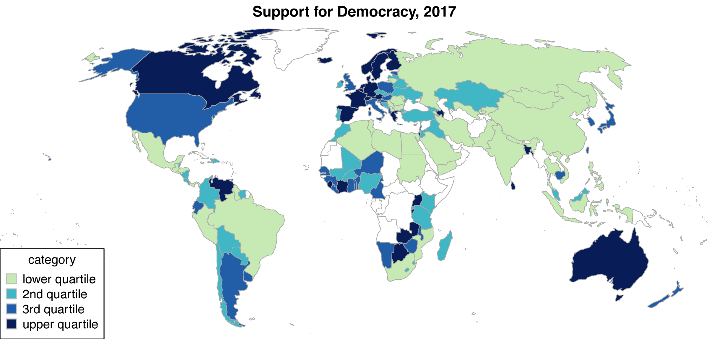

Democratic Mood
Democratic mood measures the extent to which the public of a given country supports a democratic political system and opposes any autocratic alternatives. In contrast to satisfaction with democracy, democratic mood captures principled support for democracy. It is measured by applying a Baysian latent variable model to aggregated survey data from a wide variety of cross-national survey projects, covering over 100 countries and up to 30 years each.
The Bayesian model is developed and described in a Political Analysis article (ungated version here). The mood estimates are extended and applied in two further articles in the American Journal of Political Science (ungated) and American Political Science Review (ungated). The latter includes plots of all national mood time-series. A plot of democratic mood in 2017 is below

The supplementary materials for both articles provide full details on the exact survey items which were included – as well as those which were excluded – the coding scheme applied to aggregate the micro data, and the public opinion projects which fielded these surveys (see, e.g., here).
The democratic mood estimates are available in this dataset, provided in CSV format. The estimates span from 1988 (in a few cases) to 2017 (for all 137 cases). The dataset includes the following variables:
- Country – country name
- Year – the year of observation
- ISO_code – a three digit country code
- Dem_mood – point estimates of democratic mood for each country and year
- N_response – the number of (aggregated) survey items available for that country and year
- X1 through X100 – 100 random draws from the posterior density of democratic mood, for users interested in capturing the uncertainty of estimation.
The Alexandra Xenophobia Survey
The Alexandra Xenophobia Survey was conducted in 2011 in Alexandra, in Johannesburg, South Africa. Alexandra has seen a fair amount of anti-immigrant violence, most notably in 2008. The survey focused on measuring respondents’ perceptions of, emotional reactions to, and inclinations to take part in violence against immigrants. The sample is a representative sample of 497 South African residents of Alexandra. These data were used in two articles, published in the British Journal of Political Science and Research & Politics. The data are available here.